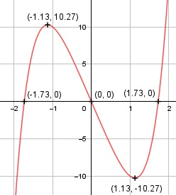

Aufgabe 63 f(x) = x5 + x3 - 12x f'(x) = 5x4 + 3x2 - 12, f''(x) = 20x3 + 6x, f'''(x) = 60x2 + 6 Definitionsbereich: -∞ < x < ∞ Wertebereich: -∞ < f(x) < ∞ Asymptoten: - Symmetrie zur y-Achse bzw. zum Punkt (0|0): f(-x) = (-x)5 + (-x)3 - 12(-x) f(-x) = -x5 - x3 + 12x ≠ f(x) --> keine Achsensymmetrie -f(-x) = -(-x5 - x3 + 12x) -f(-x) = x5 + x3 - 12x = f(x) --> Punktsymmetrie nur ungerade Exponenten von x Nullstellen: f(x) = 0 x5 + x3 - 12x = 0 x * (x4 + x2 - 12) = 0 x1 = 0 x4 + x2 - 12 = 0 Substitution: x2 = z z2 + z - 12 = 0 p, q - Formel: p = 1, q = -12 z1,2 = z1,2 = -0,5 ± z1,2 = -0,5 ± z1,2 = -0,5 ± 3,5 z1 = 3 Rücksubstitution: x2,32 = 3 |ⱱ x2,3 = ± 1,73 z2 = -2 Rücksubstitution: x4,52 = -2 --> keine weiteren Nullstellen N1 (0|0), N2(1,73|0), N3(-1,73|0) Schnittpunkt mit der y-Achse: x = 0 f(0) = 05 + 0x3 - 12 * 0 = 0 Sy(0|0) Extrempunkte: f'(x) = 0 5x4 + 3x2 - 12 = 0 Substitution: x2 = z 5z2 + 3z - 12 = 0 A, B, C - Formel: A = 5, B = 3, C = -12 z1,2 = z1,2 = z1,2 = -3 ± 15,78 z1,2 = ------------- 10 z1 = 1,28 Rücksubstitution: x1,22 = 1,28 |ⱱ x1,2 = ± 1,13 f(1,13) = 1,135 + 1,13x3 - 12 * 1,13 = - 10,27 f(-1,13) = 10,27 wegen Punktsymmetrie z2 = -1,88 Rücksubstitution: x3,42 = -1,88 --> keine weiteren Lösungen f''(1,13) = 20 * 1,13x3 + 6 * 1,13 > 0 --> Tiefpunkt (1,13|-10,27) f''(1,13) = 20 * (-1,13)x3 + 6 * (-1,13) < 0 --> Hochpunkt (-1,13|10,27) Wendepunkte: f''(x) = 0 20x3 + 6x = 0 x * (20x2 + 6) = 0 x1 = 0, f(0) = 0 20x2 + 6 = 0 |-6 20x2 = -6 |:20 x2 = -0,3 --> keine weiteren Lösungen f'''(0) = 60 * 0x2 + 6 ≠ 0 --> Wendepunkt (0|0) Graph:
